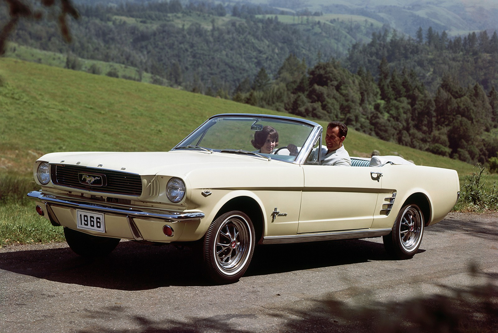
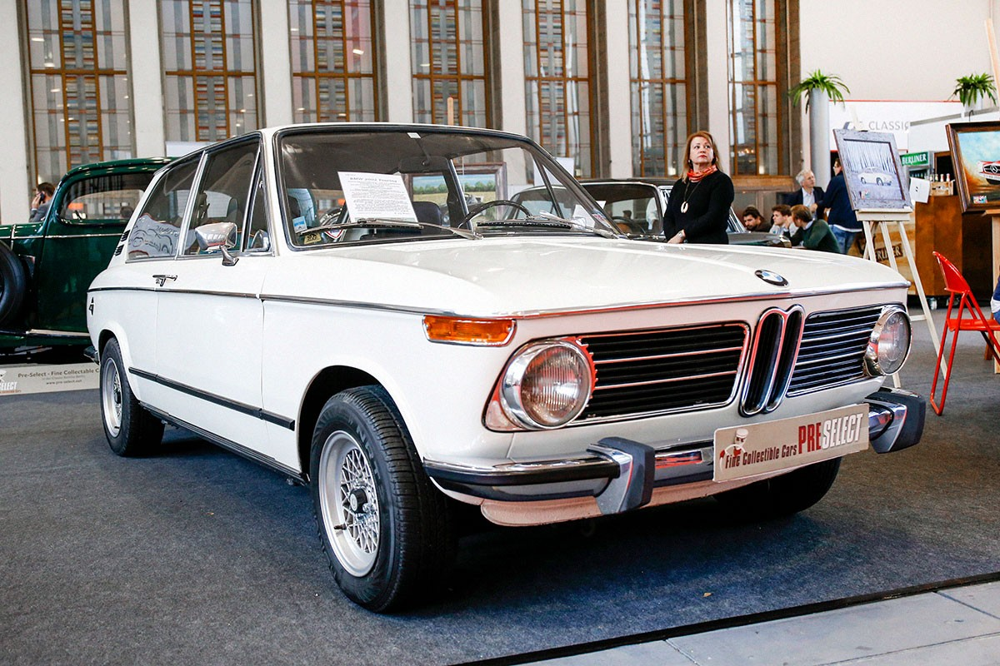
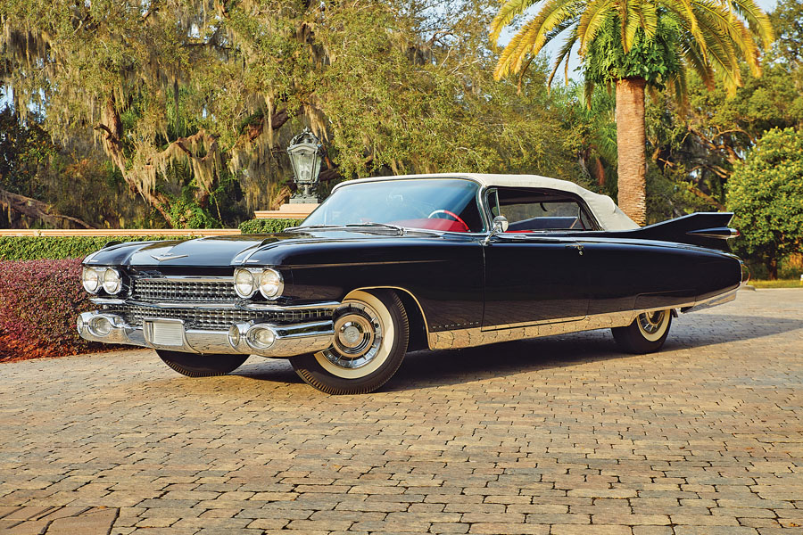
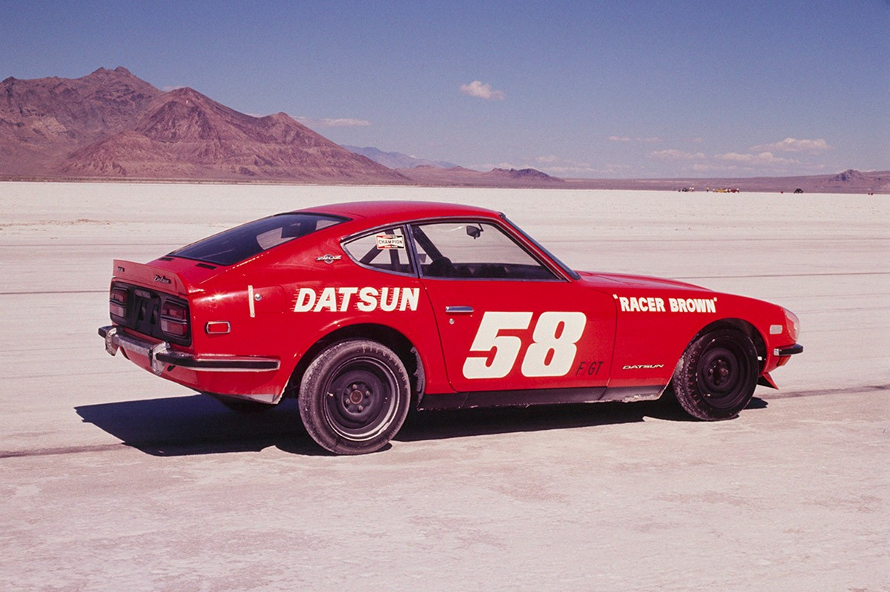

Classic Cars
Classic cars have something that everyone seeks… Nostalgia! Come feast your eyes on some of the most iconic vehicles ever made!
Ford Mustang

The Ford Mustang is a timeless American classic. It might be the car that everyone knows in one form or another. The first, and arguably the most iconic, generation of the Ford Mustang was manufactured from 1965 to 1973. These things were so popular that Ford couldn't keep them in stock. What ended up happening was people kept on buying them so Ford kept on making them. As a result, you can now bag yourself one of the most classic cars of all time for fairly reasonable price.
BMW 2002

The BMW 2002 is a fairly understated car, but that's what makes it amazing, it's so unassuming! You would never believe that it became the blueprint for every two-door coupe on the market. With its rearwheel drive in its Torquay engine accompanied with its lightweight, the BMW 2002 glided across the pavement at high velocity. What's even cooler was at the time this car was marketed as a family car, meeting the price was actually fairly affordable.
Cadillac Eldorado

Would you like to cruise in style and comfort? Then look no further than the Cadillac Eldorado! In the mid-20th century Cadillac reign supreme over any other luxury car manufacturer in North America. With exciting designs like the El Dorado, and no luxury spared in the manufacturing of these cars, it's hard to deny that. The El Dorado possesses an unmatched combination of power, presence, and extravagance. If you are hard-working salary man back in the day, you would be working for one of these.
Datsun 240z

I know Japanese cars are technically David's specialty, but I just had to get one in here. The Datsun 240 Z is by far one of the best classic cars of all time. Throughout the 60s and 70s Japanese car manufacturers were taking world-renowned cars, disassembling them, figuring out what people liked about them, and then making their own version of that car with better parts, better features, better build quality, and more power. For Nissan this culminated in the 240 Z. This car is so good that they never stopped making them! They just started making new versions. What's not to love!